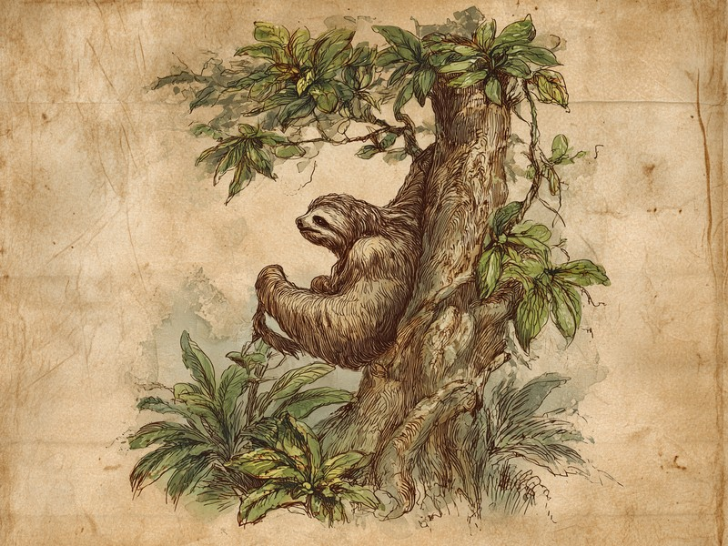

1週間に1回だけ木から降りて地面で用を足す、それだけのことに全エネルギーの約8%を注ぎ込み、しかも命まで落としかねない「ざんねん」なトイレ事情。理由は科学者たちの間でも、まだ決着がついていません。 Why do sloths risk their lives for a once-a-week bathroom trip? Scientists are still arguing about it.
ナマケモノの地上でのトイレは週に1回ほどですが、往復に1日のエネルギーの約8%を使ううえ、コスタリカの調査では記録された死因の半数以上がこのトイレ中に集中しています。理由は科学者の間でもまだ決着していません。
- 頻度:地上でのトイレはおよそ週に1回
- 消費エネルギー:木を降りて戻る一往復で1日のエネルギーの約8%
- 危険性:コスタリカの野外調査では記録された死因の半数以上がトイレ中
- 理由:蛾と藻の共生説(2014年)と、祖先由来の習性説(2021年)があり未解明
🔍 ちょっと寄り道:動物の行動には理由があるように、人の性格にも傾向があります。気になった方は性格診断(MBTI)も覗いてみてください。
トイレは週に1回、しかもエネルギーの約8%を使う大仕事
ミユビナマケモノのトイレはおよそ週に1回で、木を降りて用を足し、また登って戻る一往復に、1日に使うエネルギーのおよそ8%を費やすとされています。ふだん暮らしている木の上から地面まで降りて排泄するわけですが、哺乳類としては驚くほど間隔の空いたトイレのスケジュールです。そのうえ、ただでさえ動くことを最小限に抑えて生きている動物が、たった一度のトイレのために貴重なエネルギーを大盤振る舞いしているわけです。ゆっくりしか動けない体には、この「たまのお出かけ」がかなりの重労働。なんとも「ざんねん」な省エネの穴と言えます。
記録された死因の半数以上が、地上でのトイレ中
コスタリカでの野外調査では、記録されたナマケモノの死亡例のうち半数以上が、この地上でのトイレの最中に起きていたそうです。このトイレの旅は疲れるだけでなく、危険でもあります。ナマケモノの体は木にぶら下がることに特化していて、地面を移動するのはとても不得意。そのため地上に降りたとたん、捕食者にとって格好の獲物になってしまいます。冒頭の「半数以上」という数字も、ナショナルジオグラフィックが伝えた、生態学者ジョナサン・パウリ氏のチームによる調査結果です。ほかの木の上で暮らす動物の多くは、わざわざ降りずに用を足します。それなのにナマケモノだけが、週に一度、命を賭けてトイレに向かうのです。
「蛾と藻のためだった」説と「ただの昔のクセ」説、まだ決着せず
蛾と藻との共生のためとする2014年の説と、祖先から引き継いだだけの習性かもしれないとする2021年の説があり、科学者もまだ答えを出せていません。なぜそこまでして地面に降りるのか。2014年にパウリ氏のチームが提唱した有力説は、三者のもちつもたれつの関係です。ナマケモノの毛には蛾がすみつき、地面に落とされたフンの中で繁殖する。その蛾やフンの分解が毛に生える藻の栄養となり、ナマケモノはその藻を自分の毛から食べて栄養を補っている——だから危険な旅も割に合う、という考え方です。ところが2021年の研究がこれに異を唱えました。調べた消化物の83%に藻の痕跡がなく、毛をなめて食べる様子も確認できず、さらに地上で排泄する種のほうが捕食されるリスクはむしろ低かったというのです。この研究は、地上排泄は祖先から引き継いだだけの習性で、今はとくに意味がないのかもしれないと提案しています。理由があるのか、ただのクセなのか。科学者もまだ答えを出せていない「ざんねん」なトイレ習慣です。
出典: Monge-Nájera, J. "Why Sloths Defecate on the Ground: Rejection of the Mutualistic Model" Cuadernos de Investigación UNED, 2021. scielo.sa.cr
ナマケモノはふだん、ほとんど動かずに木の上で過ごしています。それなのにトイレのときだけは、わざわざ地面まで降りて、また登って戻るという大移動をこなします。1週間で最も動く瞬間が、トイレの往復かもしれません。